Construction・Dining
多摩美術大学創立9O周年記念事業 EXPLOSION & EXPANSION 爆発と拡張 ―― 多摩美術大学の制作の現場から
[Exhibition]
REMORA : Nozomi Terashima, Arata Nakagawa, Haruto Nozawa
Curator : Mayu Watanabe
Supervisor : Tetsuya Oshima
2025
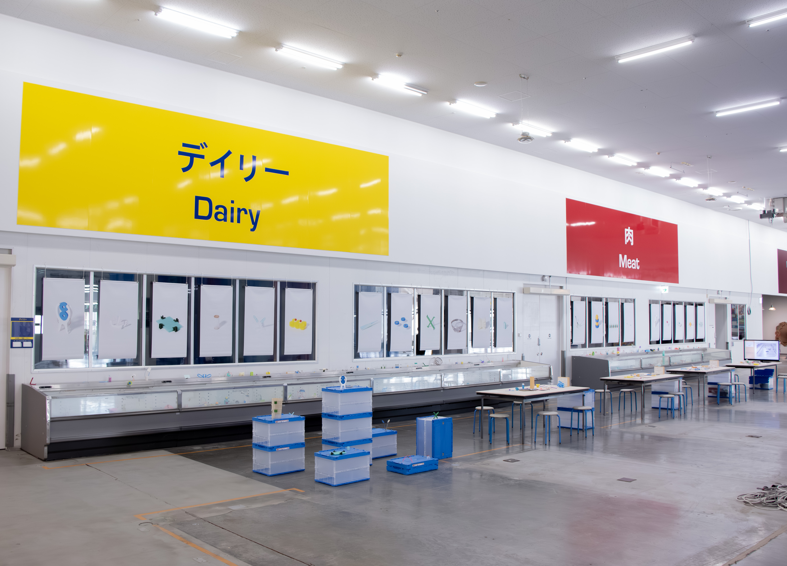
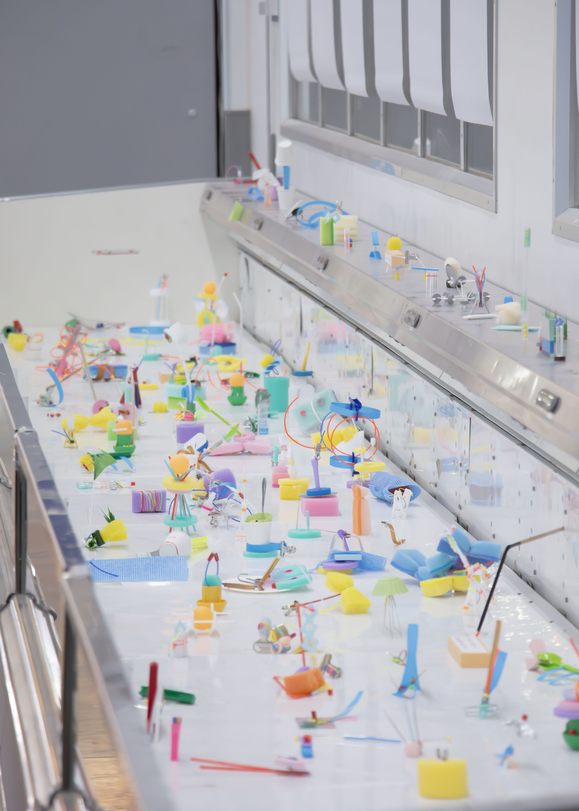
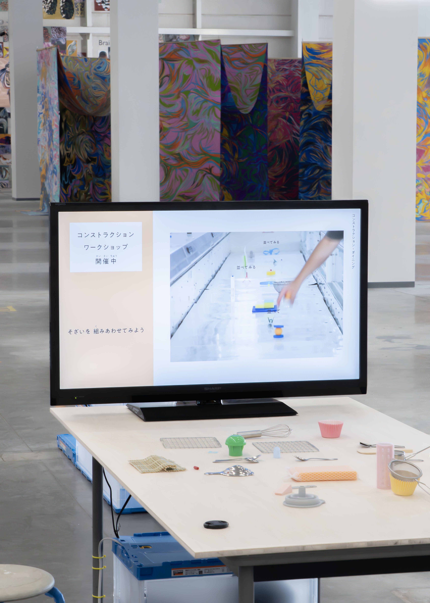
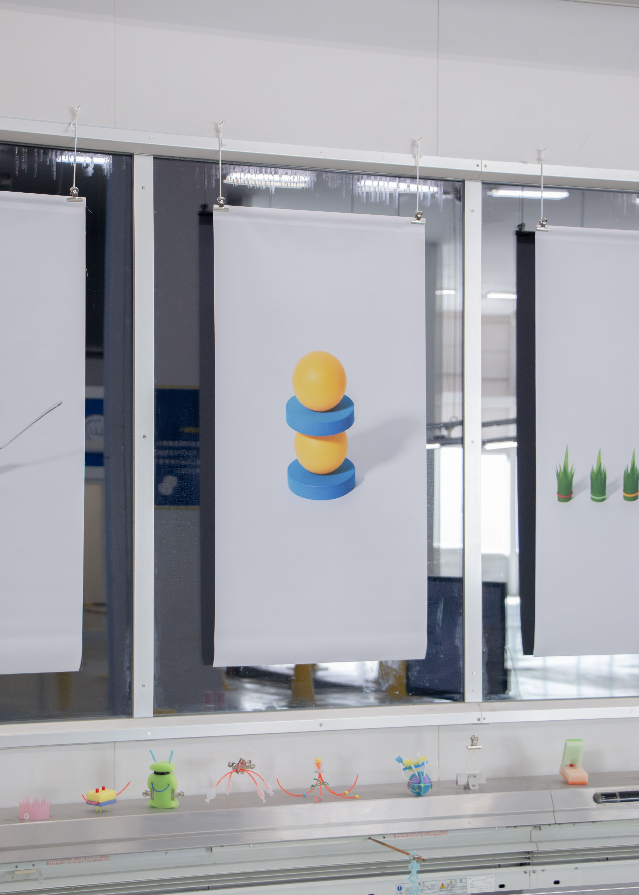
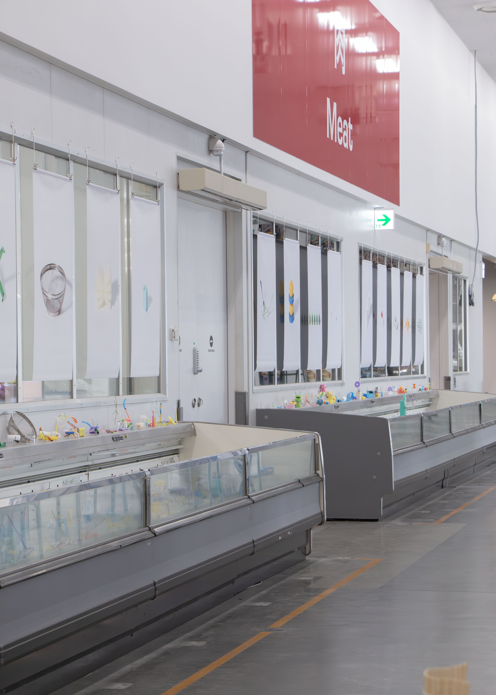
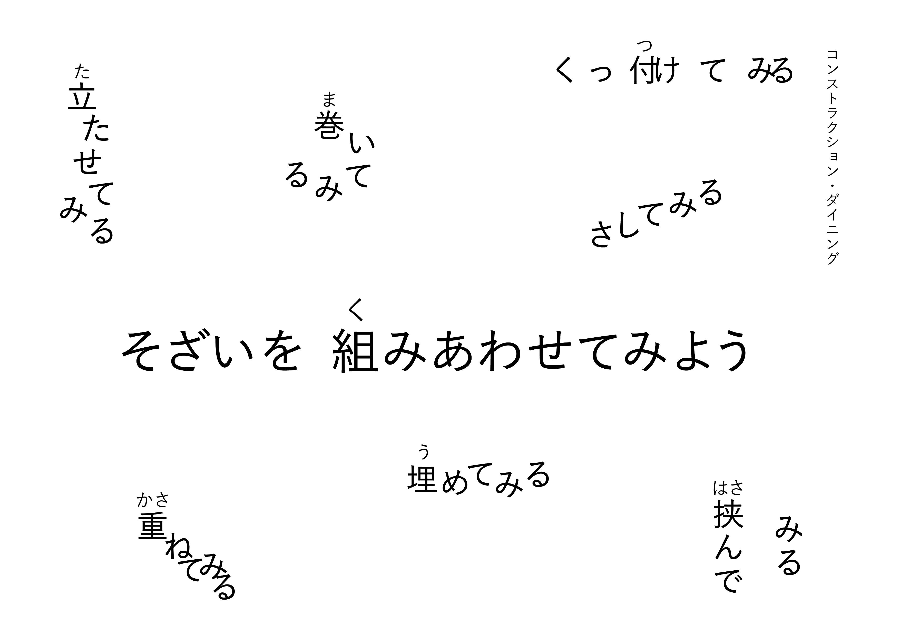
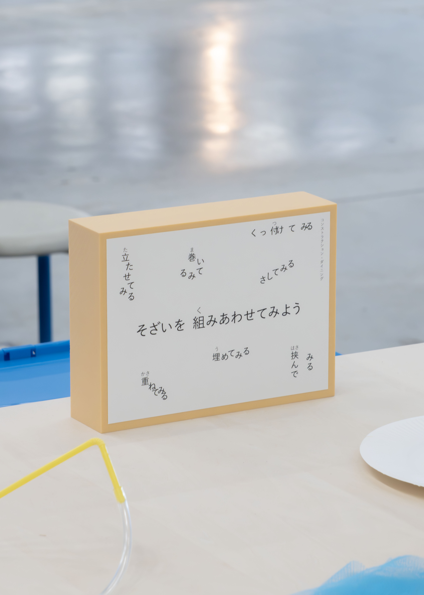
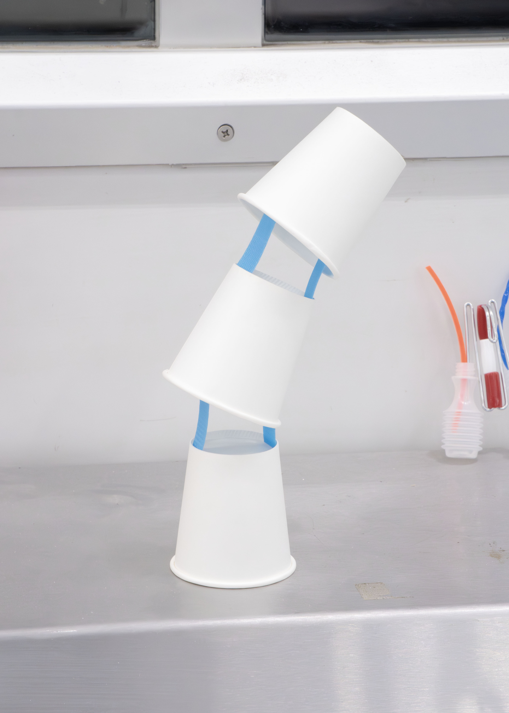
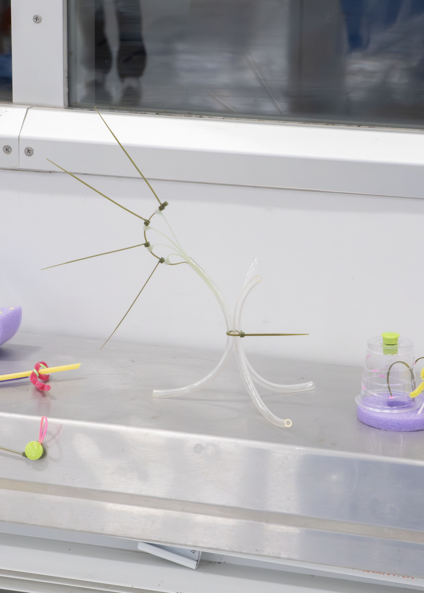
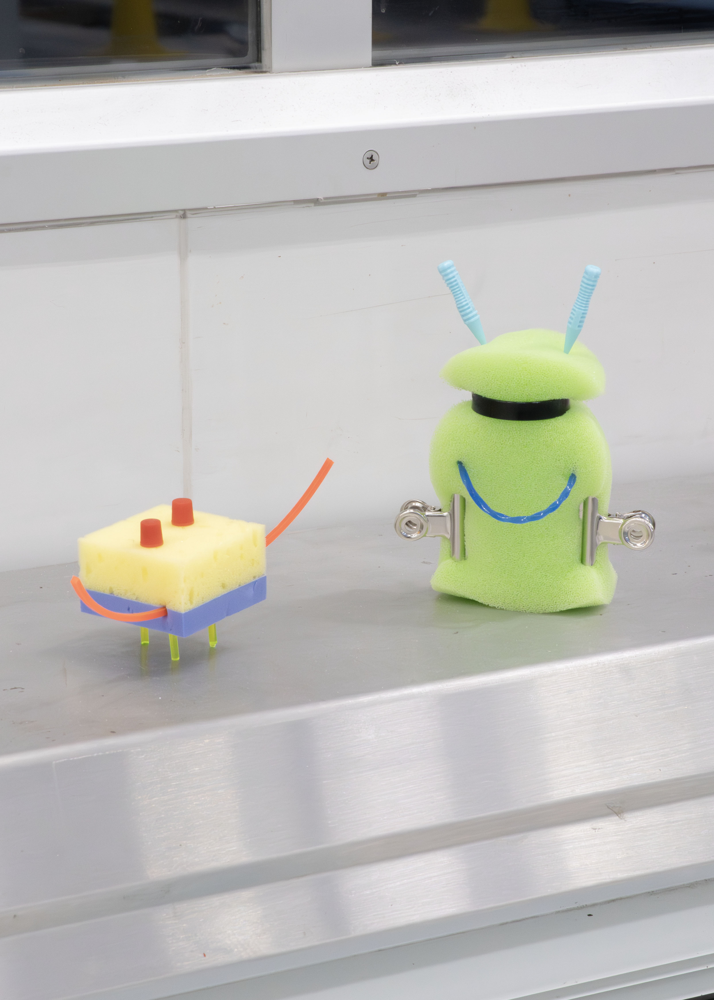
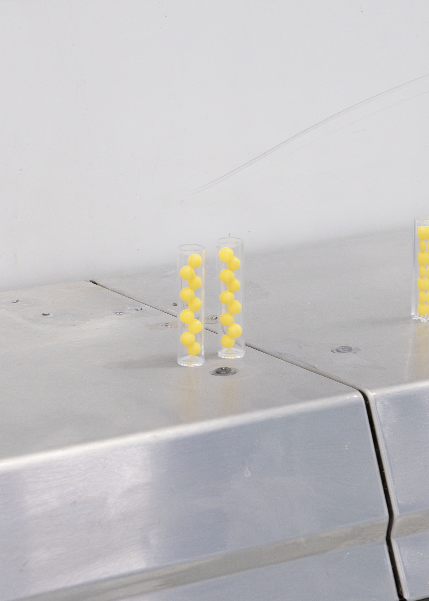